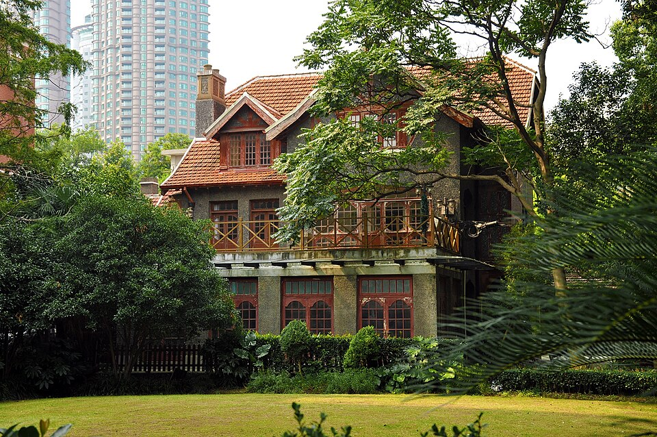
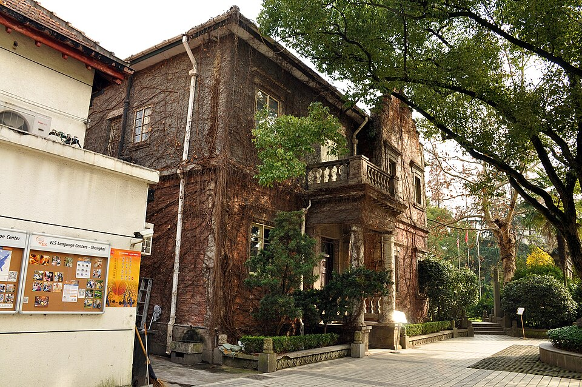
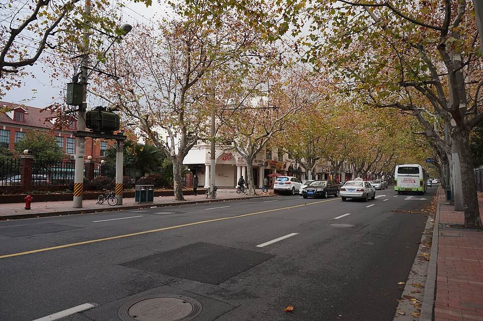
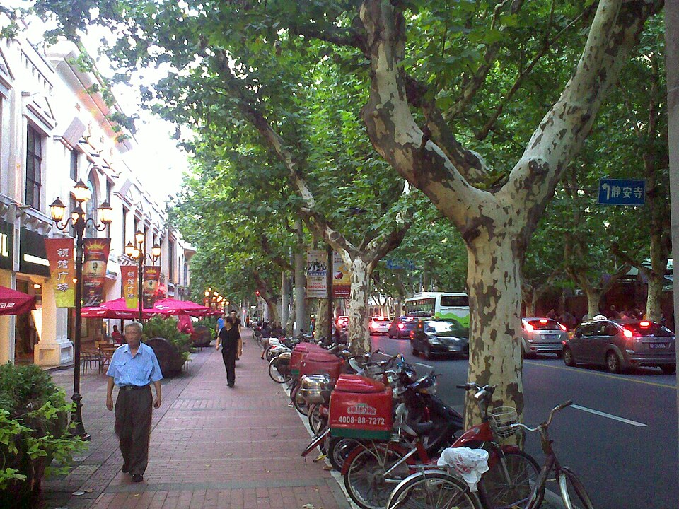
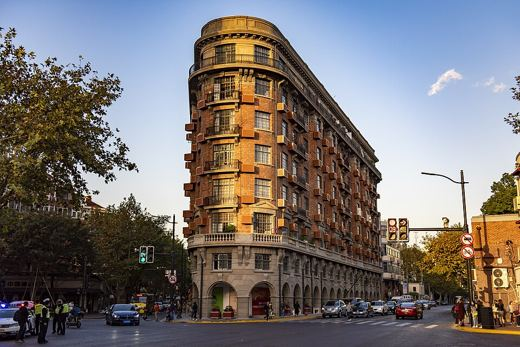
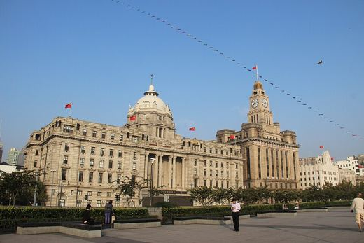

Около 850 м в центре бывшей концессии. По путеводителю chinavigators это улица с самым большим числом кафе в Шанхае: свои обжарщики кофе, эспрессо-бары, японская пекарня. Вдоль улицы старые платаны.
В будни утром здесь спокойно, к позднему утру людей больше. На улице особняки 1920-30-х, в одном из них театр Shanghai Dramatic Arts Center.
| Вход | бесплатно |
|---|---|
| Кафе | часы у каждого свои, не проверял |
Источник: SCMP, chinavigators.com, enprimeurclub.com; адреса домов - описания фото на Wikimedia Commons. Проверено 27.10.2026 11:28 по Шанхаю.


Фото: Wikimedia Commons, автор и лицензия под каждым. Пешие отрезки и такси: OSRM. ← ко всему плану